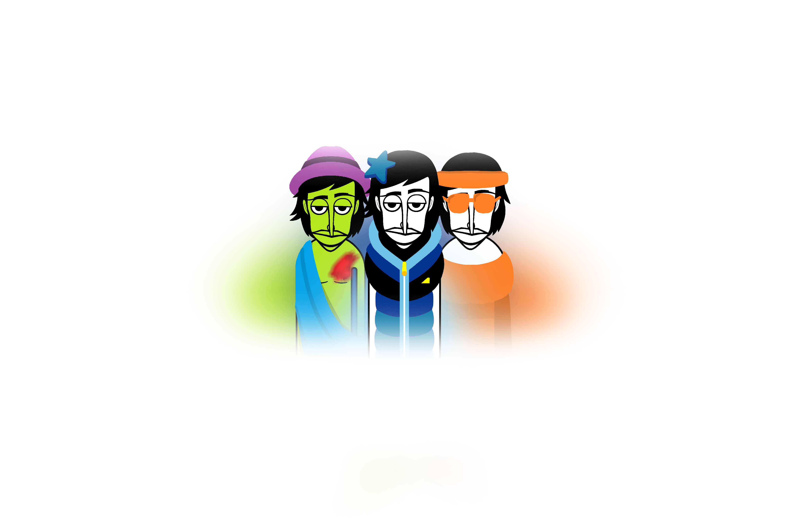

- The Sections -
| There are a lot of themes and images of certain things, that’s why this mod exists 🙂 |
|
MishaBring: Everything Status: Lost media Inspired by: None Release Date: None Linked Mods: None |
 |
|
Download Links PC: None Android: None Developer Notes: Damn, I forgot to transfer one folder to my new computer, now I don’t know how to get the mod from another device because it’s now in another city |